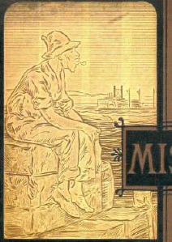
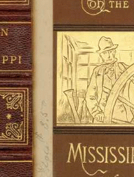
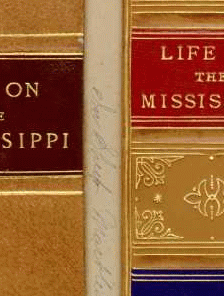
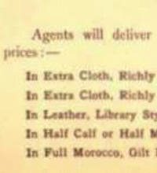

"the various prospectuses . . . indicate
better than anything else
the bases of Mark Twain's popularity" -- Hamlin
Hill
|
The point of the subscription system was to sell a book before it was published. It was MT's policy, in fact, not to publish a work until 40,000 copies had been sold. Neither the agent selling it nor the reader buying it could see a work like Huck Finn as we know the text. They relied on the prospectus of the novel. Sometimes called a "canvassing book" or a "sales dummy," a prospectus was put together by a publisher out of sample pages from a forthcoming book. It was designed to catch a consumer's eye, so the cover was often quite fancy (as you can see from this cover of the prospectus of Life on the Mississippi), and the book's illustrations were often more prominently featured than its text. Agents were instructed to keep the prospectus in their own hands, while displaying various pictures and reading selected passages to the customer. Once someone had agreed to purchase, agents offered them samples of the different bindings available, always making sure to recommend the most expensive options -- as one agent's manual put it, "These not only pay the Agent far the best, but the CUSTOMER is invariably better satisfied." (The sample bindings and the list of prices for Life on the Mississippi are displayed below.) It's not clear what direct role MT played in deciding which parts of his works to include in the prospectuses. He certainly appreciated their importance. When Huck Finn was in production at his own publishing company, MT wrote Charles Webster: "As fast as [the illustrator] gets through with the chapters, take them & read & select your matter for your canvassing book. . . . Remember," he added, referring to the prospectus for Life on the Mississippi displayed here, "Osgood fooled away no end of time on his canvassing book, & then got out one that was eminently calculated to destroy the sale." MT's last remark indicates how much the prospectuses of his books reveal about the dynamics of his career. Because they were calculated to present MT's works as attractively as possible, from their contents we can see how his books were defined for the public that MT originally wrote them for. It is a crude but graphic index to what MT and his publishers thought his audience would like about a particular text. A prospectus re-presents the work of literature as a commodity in a very blunt way -- though frankness is not its chief characteristic. As with the famous "Notice" MT attached to the front of Huck Finn, in creating a prospectus MT and his publishers were perfectly willing to mislead potential readers. The main goal was to suggest how much -- in size and weight as well as amusement and instruction -- buyers will get for their money. Little effort was made to preserve anything like the aesthetic integrity of a work, so that, for example, the prospectus of Innocents Abroad features in the beginning many serious full-page illustrations of scenes from the Holy Land -- even though the narrative doesn't get there until the end, and even though MT's text treats those same scenes in a very different spirit. Religious works were an early staple of subscription firms, and an agent could use the prospectus of Innocents to sell the book that way. It's also surprising to see how little effort a prospectus makes to arouse a curiosity that can only be satisfied by buying the book. In some sense the modern equivalent to the prospectus is the movie preview, but movie previews would never give away the whole story as, for example, the prospectus of Tom Sawyer does, when its sample pages include Tom rescuing Becky from the cave, and the death of Joe, and the fact that Tom finds the treasure. The apparent indifference of MT and his publishers to this way of hooking a audience can probably be attributed to the typical character of subscription books before MT used the system to market his novels. The typical big subscription book wasn't conceived as an aesthetic whole, or a particular kind of reading experience, but as a kind of bulk package consisting of elegant binding, good paper and copious illustrations held together by some kind of text. If the subscription system encouraged MT to write in certain ways, I think it encouraged his readers to read in certain ways too -- ways that a consideration of the prospectuses which mediated between MT and his readers can help us appreciate. For this reason the archive reproduces the prospectuses for Innocents Abroad, and Roughing It, and Tom Sawyer, and Huck Finn, and Connecticut Yankee, and Pudd'nhead Wilson. |